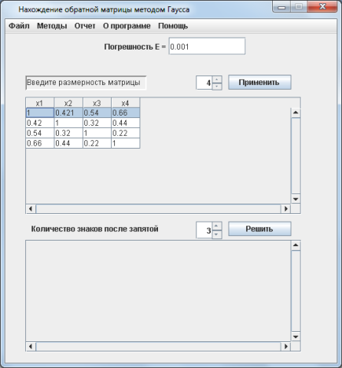

Нахождение обратной матрицы
Практическая часть
Теоретическая часть
Если А – невырожденная матрица, то существует единственная обратная матрица A-1 такая, что:
, где E - единичная матрица.
Невырожденной называется матрица, определитель которой не равен 0.
Нахождение обратной матрицы методом элементарных преобразований можно осуществить с помощью метода Гаусса. Процесс Гауссового исключения является наилучшим способом обращения матрицы.Пусть дана матрица А:

Практическая часть
Пошаговые действия |
Пояснения к действиям |
| 1. Заходим в программу. Появляется окно, показанное на рисунке. Выбираем категорию методов "Методы линейной алгебры" Выбираем метод "Нахождение обратной матрицы методом Гаусса". Нажимаем кнопку "PUSH". | |
| 2. Появляется окошко, показнное на рисунке слева. В соответсвующем поле вы задаете размерность матрицы. Также в поле "Погрешность Е" можете задать необходимую точность при решении. После чего необходимо нажать кнопку "Применить". | |
|  | 3. На следующем этапе появляется таблица для ввода матрицы А. В ячейки таблицы вводите соответствующие данные. После того, как все данные были введены нужно нажать кнопку "Решить". |
| 4. После выполнения всех действий, описанных выше, внизу экранной формы будет выведена обратная матрица A-1. | |
 |
5. После того, как вы получили ответ, можно просмотреть отчет, где предоставлено поэтапное решение. Для этого необходимо в главном меню программы, расположенном на верху экранной формы выбрать пункт "Отчет/Просмотр отчета". Вы увидите окно, расположенное слева. Также можно сохранить этот отчет нажав кнопку главного меню "Отчет/Сохранить отчет". |
 |
6. Если решение примера может пригодится вам в будущем, вы можете сохранить его с помощью конпки меню "Файл/Сохранить". В окне, которое появится(оно показано на рисунке слева) необходимо выбрать папку, в которую он сохранится и написать название. |